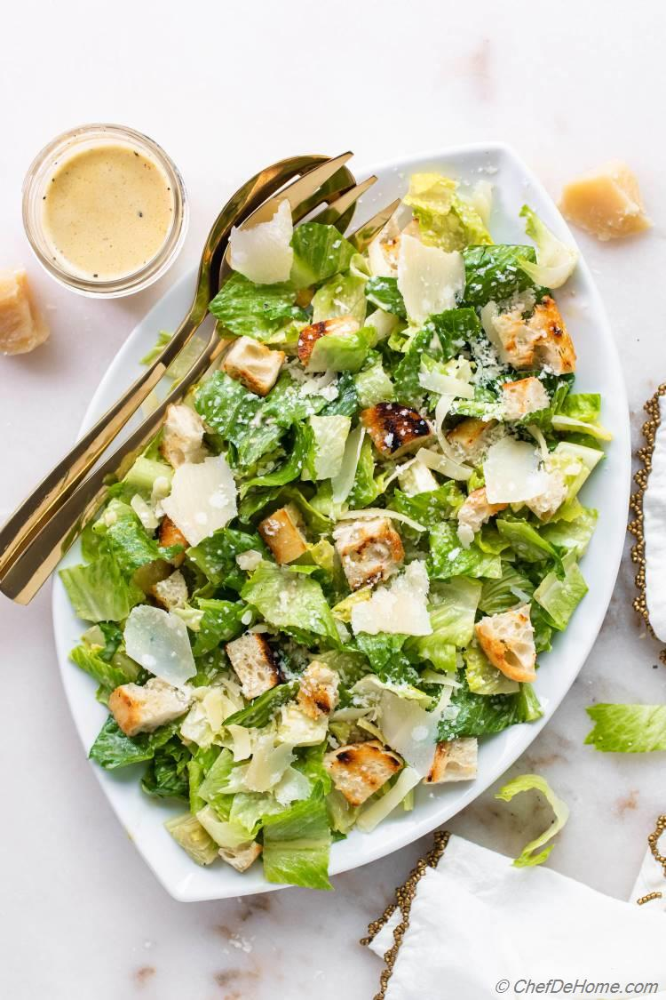

Caesar salad

Description
A classic Caesar salad. Crisp romaine lettuce, Parmesan cheese, and croutons are tossed in a creamy homemade Caesar dressing. Add anchovies for a more authentic flavor!
Ingredients
- 1 head romaine lettuce, washed and chopped
- 1/2 cup grated Parmesan cheese
- 1/4 cup croutons
- 4 anchovy fillets, minced (optional)
- Caesar Dressing:
- 1/2 cup mayonnaise
- 2 tablespoons lemon juice
- 1 clove garlic, minced
- 1 teaspoon Dijon mustard
- 1/4 cup grated Parmesan cheese
- Salt and pepper to taste
Steps
- In a large bowl, combine the romaine lettuce, Parmesan cheese, croutons, and anchovies (if using).
- In a separate small bowl, whisk together the mayonnaise, lemon juice, garlic, Dijon mustard, Parmesan cheese, salt, and pepper.
- Pour the dressing over the salad and toss gently to combine.
- Serve immediately.
Home